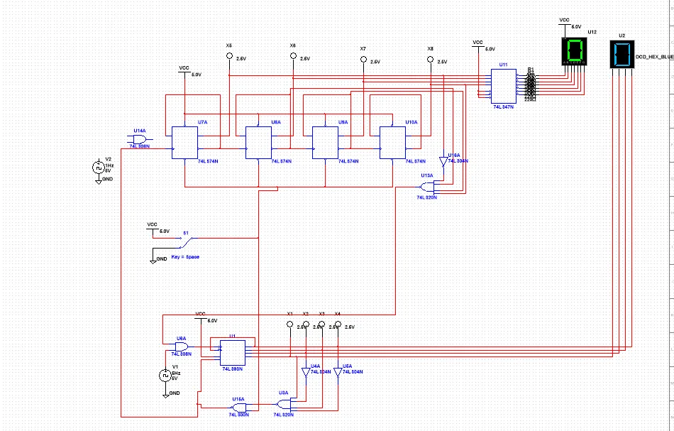
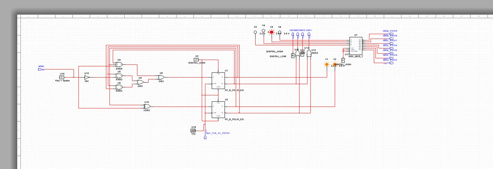

Digital Electronics
Digital Electronics
Digital Logic
Circuits
Electronics
Project Goal
Designed and analyzed digital logic circuits — covering logic gates, combinational logic, flip-flops, and sequential circuit design.
TODO: Replace this placeholder with details about your digital electronics project — circuits built, logic designs, truth tables, and hardware used.
What I Built
Functional digital logic designs with verified truth tables and timing behavior.
Photos & Visuals


Build Process
- Plan — defined requirements and constraints for the project.
- Design — sketched, modeled, or simulated the solution before building.
- Build — fabricated, assembled, or implemented the design.
- Test & Refine — evaluated results and iterated on the design.
TODO: Replace the generic steps above with the specific steps you took on this project, and add photos of each stage.
Key Problem Solved
Minimizing logic complexity and verifying sequential circuit behavior across all input states.
Skills Gained
Boolean algebra, sequential logic design, and how digital systems are built from simple gates.